在遙遠的國度台東大學，有名貓咪狂熱份子喵嘉宏教授，為了發動微積分戰爭，所以要篩選高智商貓咪！
| 緬因貓 | 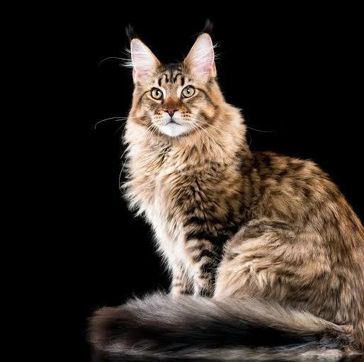 |
| 介紹 | 緬因貓是巨大而且精力充沛的貓種，平均有6~8公斤重，公貓體長可以增長到接近一公尺的程度。緬因貓常見的毛色花紋是棕色虎斑紋（Brown Tabby），除了黑銀色、陰影色、魚骨斑、點狀斑紋之外，緬因貓的毛色樣式最有名的還包括三花和玳瑁（類似俗稱的三色貓）。緬因貓因為其聰穎、機伶以及活潑主動而異於其他貓種。緬因貓常常傾向使用自己的前掌去撿拾物品，而到最後學會使用腳掌開衣櫃門，打開水龍頭，沖馬桶，甚至是拾取小物件。有的緬因貓會以「以碗就口」而不是「以口就碗」的方式進餐或飲水。 |
| 虎斑貓 | 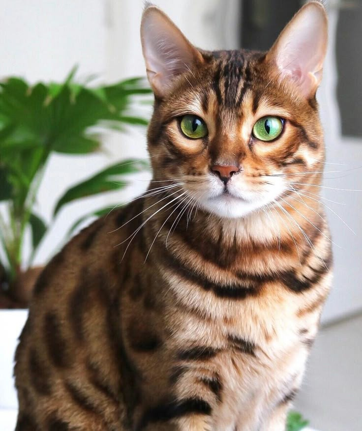 |
| 介紹 | 虎斑貓並非獨立品種，而是貓咪最經典的毛色型態。其最大特徵為額頭明顯的「M」字標記、深色眼線，以及身上的魚骨紋、螺旋紋或斑點。虎斑貓基因源自野貓祖先，通常個性活潑、好奇心強且具優異獵捕天性，是極受歡迎的家貓夥伴。 |
| 明修貓 | 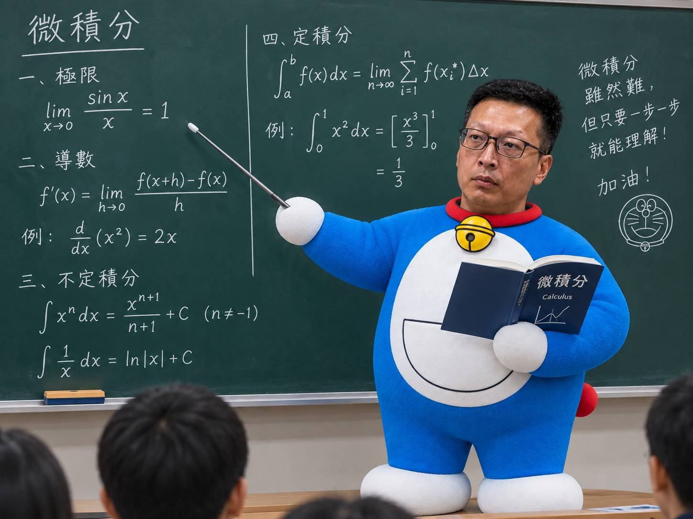 |
| 介紹 | 明修喵是喵嘉宏教授為發動微積分戰爭的秘密武器，明修喵年輕有活力22歲會抽菸，擁有尷尬對方的控場能力「這不好笑嗎？」 |
| 暹羅貓 | 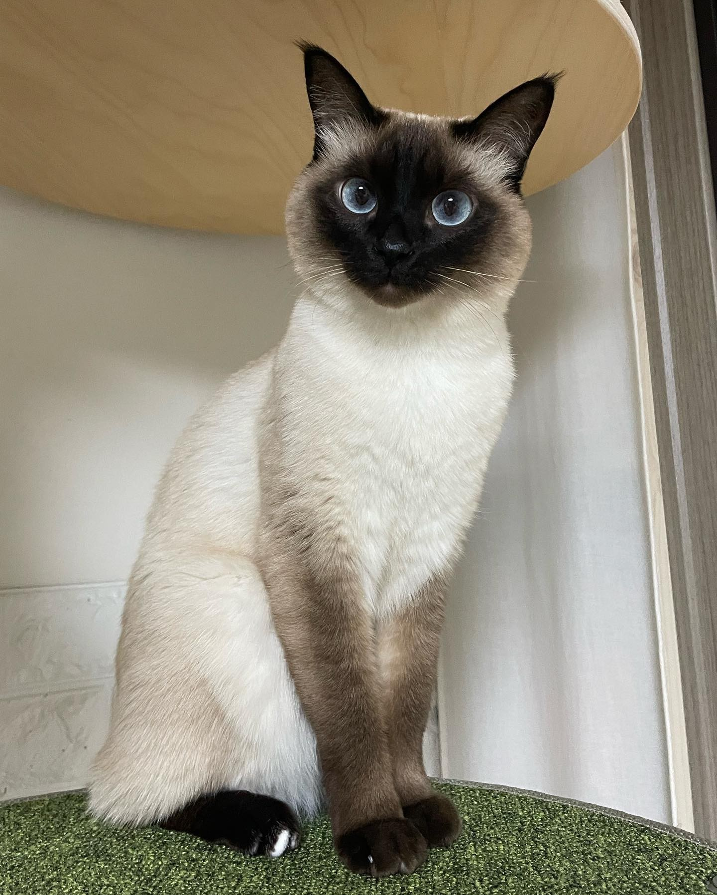 |
| 介紹 | 暹羅貓（Siamese Cat）源自泰國皇室，是最古老的短毛貓之一。其最大特色為湛藍杏仁眼與「重點色」毛色——臉部、耳朵及四肢較深，且毛色會隨溫度降低而變深。暹羅貓個性活潑黏人，極具智慧，更因熱愛用獨特聲線與主人「聊天」而聞名。 |
| 阿西比亞貓 | 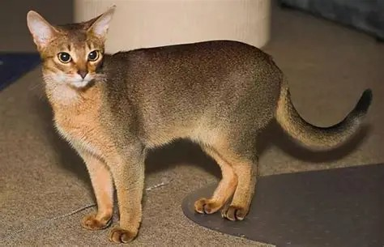 |
| 介紹 | 阿比西尼亞貓（Abyssinian）是極具代表性的古老短毛貓品種，外觀宛如野生的迷你山貓。牠們最獨特之處在於「細碎虎斑（Ticked Coat）」毛色，單根毛髮交替著深淺色澤，在陽光下會散發如絲綢般的光彩。牠們擁有大耳、杏仁眼與線條優美的肌肉型身材，被譽為「貓界芭蕾舞者」。阿比西尼亞貓個性極度活潑、好奇心強且極具智慧，熱愛攀爬高處與陪伴主人，是精力充沛又優雅的家庭夥伴。 |
| 布偶貓 | 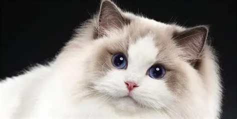 |
| 介紹 | 布偶貓（Ragdoll）發源於美國，是體型最大的家貓品種之一。牠們以仙氣十足的外貌聞名，擁有標誌性的湛藍雙眼、豐厚如絲綢般的半長毛，以及常見的八字面罩花色。由於被抱起時身體會像布偶般鬆弛放鬆而得名。布偶貓個性極度溫和、沉穩且親人，幾乎沒有攻擊性，喜歡像小狗一樣跟隨主人，聲音輕柔，非常適合家庭陪伴。 |
| 賓士貓 | 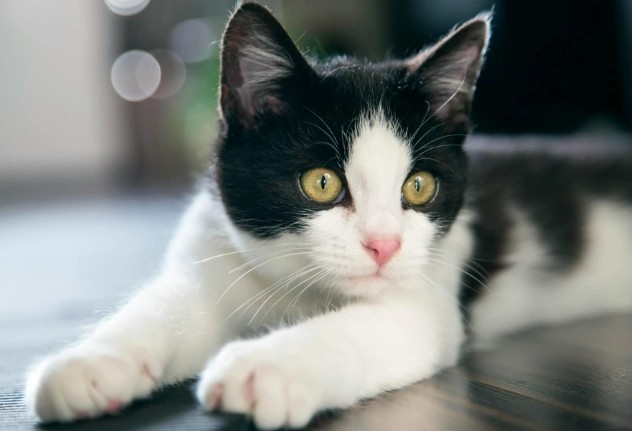 |
| 介紹 | 賓士貓（Tuxedo Cat）並非獨立品種，而是指黑白相間毛色的貓咪。因臉部黑毛分開呈倒 V 形、露出白色鼻樑，極像賓士汽車標誌而得名；英文則稱「燕尾服貓」，背部純黑、胸前與腳掌雪白，宛如身穿正式禮服。賓士貓個性活潑聰明、反應敏捷，常有許多讓人哭笑不得的奇葩舉動，被譽為「貓界搞笑藝人」，非常討人喜歡。 |
| 英國短毛貓 | 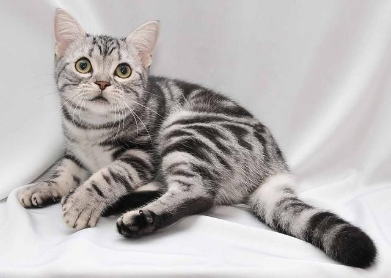 |
| 介紹 | 美國短毛貓（American Shorthair）簡稱「美短」，祖先隨歐洲移民搭乘五月花號前往北美，最初為保護糧食的捕鼠「工作貓」。最經典的特徵為銀白底色搭配黑色大理石漩渦的「銀虎斑」花紋。牠們體型健壯、骨骼粗壯且肌肉發達。美短個性溫和沉穩、適應力極佳，既親人又保有適度獨立，體質強健，是極受歡迎的家庭伴侶。 |
| 孟加拉貓 | 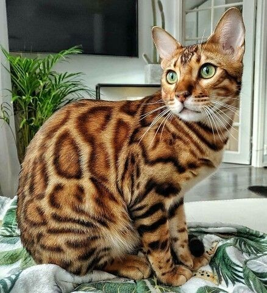 |
| 介紹 | 孟加拉貓（Bengal Cat）又稱孟加拉豹貓，是野生亞洲豹貓與家貓人工培育的品種。牠們最著名的特徵為華麗獨特的豹紋（玫瑰花斑），毛發在陽光下常散發金屬般的光澤，並擁有流線型的肌肉體態。孟加拉貓智商極高、精力充沛，甚至罕見地喜歡玩水。牠們個性外向自信且親人，兼具野性魅力與家貓的溫柔，是極具活力的家庭伴侶。 |
| 橘貓 | 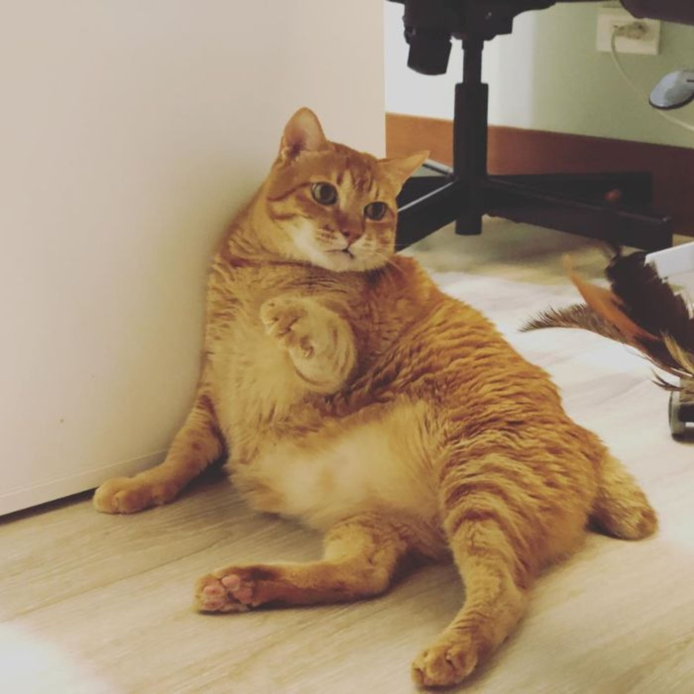 |
| 介紹 | 橘貓（Orange Tabby）並非獨立品種，而是指帶有橘色毛色的貓咪。受到基因影響，所有橘貓身上都帶有虎斑斑紋，且因橘色基因位於 X 染色體上，公貓比例高達約八成。橘貓以「親人暖男」與「食欲旺盛」聞名，個性溫和膽大、極度黏人撒嬌。坊間更有「十隻橘貓九隻胖」的趣稱，是深受大眾喜愛的經典貓咪。 |
| 孟買貓 | 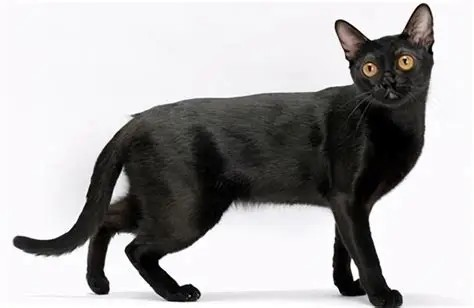 |
| 介紹 | 孟買貓（Bombay Cat）是源自美國的人工培育品種，由緬甸貓與黑色美國短毛貓雜交而成。牠們擁有如絲綢般漆黑發亮的短毛與一雙濃郁的銅金色大眼，宛如一隻迷你黑豹。雖然外表霸氣冷酷，孟買貓性格卻極度溫和黏人，被譽為貓界「小狗」。牠們智商高、好奇心強，不僅能迅速適應新環境，還喜歡玩撿球遊戲或隨牽繩出門散步。孟買貓極度渴望人類陪伴，聲音輕柔細小，是兼具高顏值與親人性格的理想家庭伴侶。 |
| 英國短毛貓 | 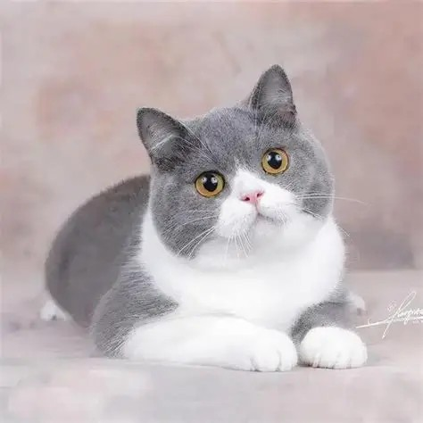 |
| 介紹 | 英國短毛貓（British Shorthair）簡稱「英短」，是英國歷史最悠久的貓品種之一。最經典的外貌特徵為圓滾滾的包子臉、大顆銅色圓眼與看似微笑的嘴唇，搭配濃密厚實如泰迪熊般的短毛，其中以灰藍毛色（英短藍貓）最具代表性。英短個性如紳士般溫和沉穩，適應力強且極具耐性。牠們親人但保有獨立性，喜歡靜靜陪伴主人，是非常受歡迎的家庭夥伴。 |
| 波斯貓 | 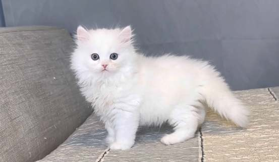 |
| 介紹 | 波斯貓（Persian Cat）起源於古代波斯，是世界上最著名的長毛貓品種，素有「貓中皇后」美譽。牠們擁有華麗豐厚的雙層長毛、標誌性的扁平臉龐與大而圓潤的眼睛，體型敦厚圓潤，氣質高貴優雅。波斯貓個性極度溫和沉靜、甜美黏人，不愛攀高跑跳，喜歡靜靜陪伴主人。因毛髮濃密且鼻道較短，需要飼主每天梳理毛髮並留意眼部清潔。 |